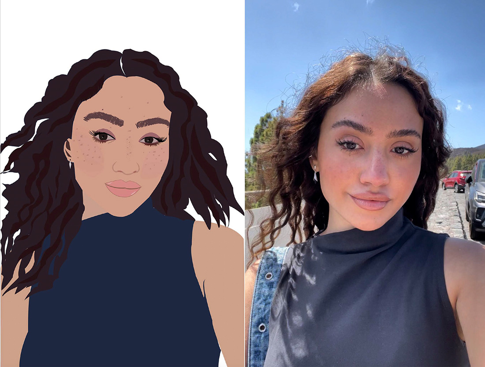
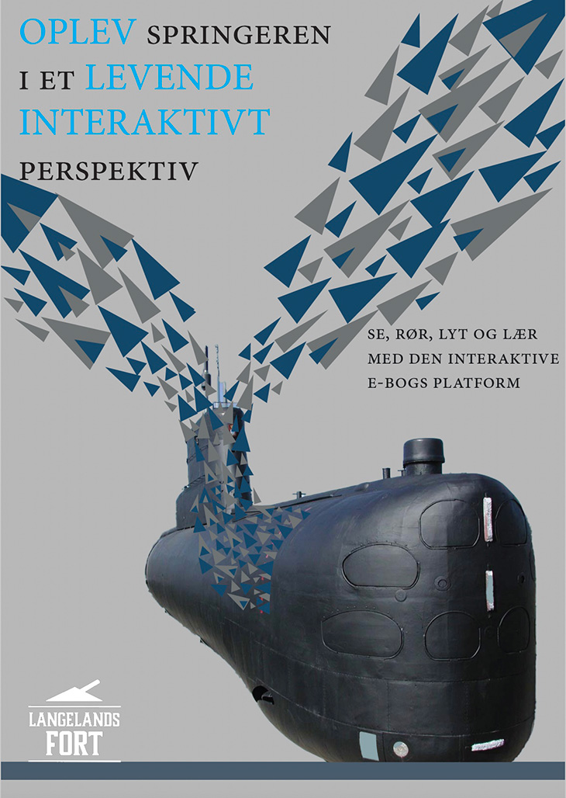
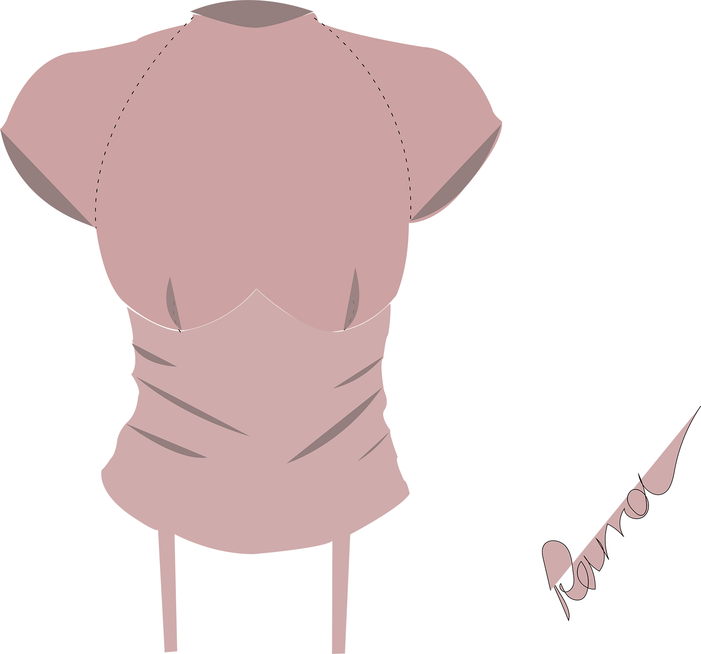
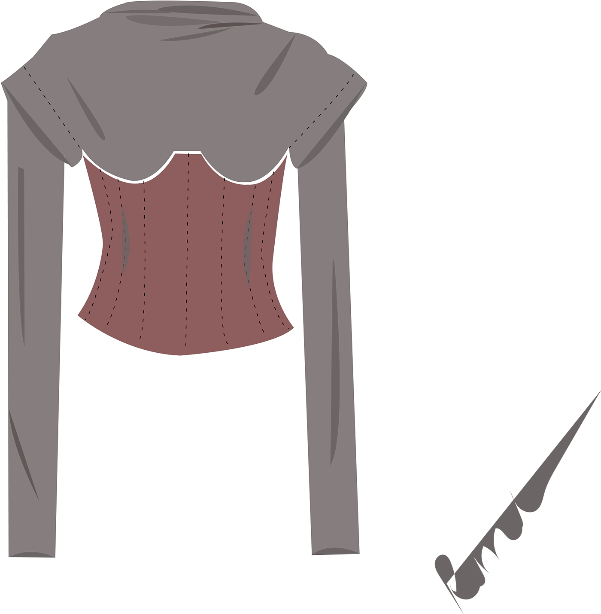

About Illustrator
Illustrator is vector-based system has been a cornerstone of my digital design journey. It offers the ability to create sharp, scalable graphics, perfect for everything from tiny icons to expansive billboards.
The control Illustrator provides through its points, lines, curves, and shapes has enabled me to craft intricate designs with precision. Its layer-based editing has streamlined managing complex elements in my projects.
A Spectrum of Possibilities, From logos to detailed illustrations, Illustrator's versatility is evident in its wide range of output capabilities. Its integration with Adobe Creative Cloud enhances the design process, bridging gaps between various creative tools.
Personal Exploration in Art Crafting a self-portrait in Illustrator was both challenging and rewarding. It pushed me to explore various artistic techniques, transforming basic shapes into a digital reflection of myself. This project was a testament to Illustrator's capacity for creative expression.

Bubble Effect Logo

Using only one tool within InDesign "The Pen Tool".

A poster was made for Langelandsfortet museum
Chrome effect logo

Fashion Drawiing

Fashion Drawing